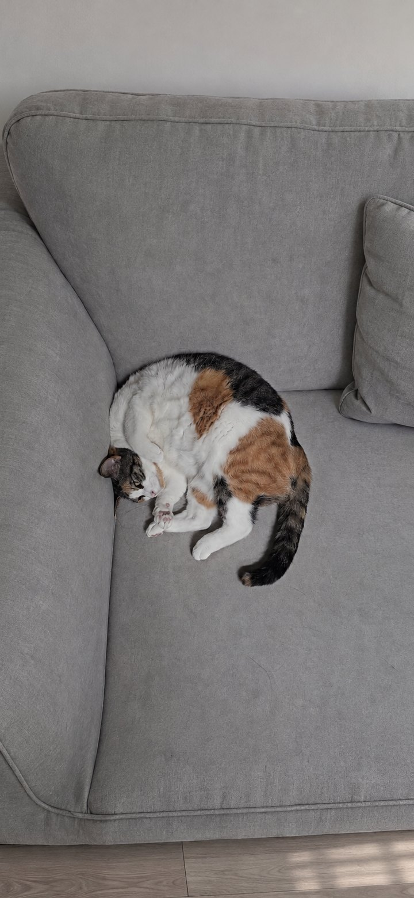
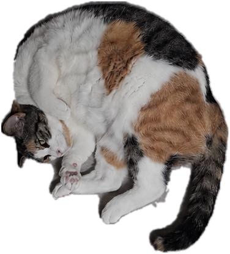
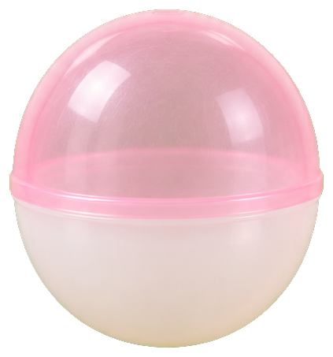
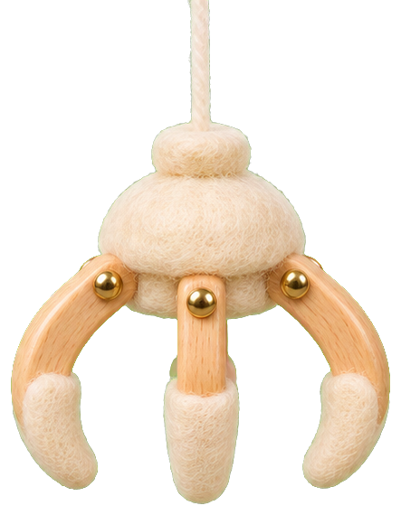
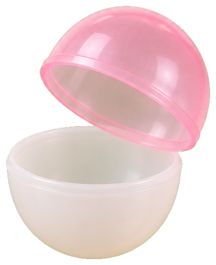
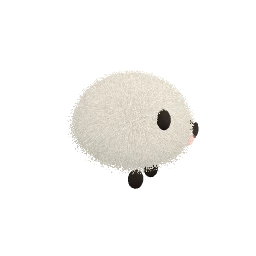
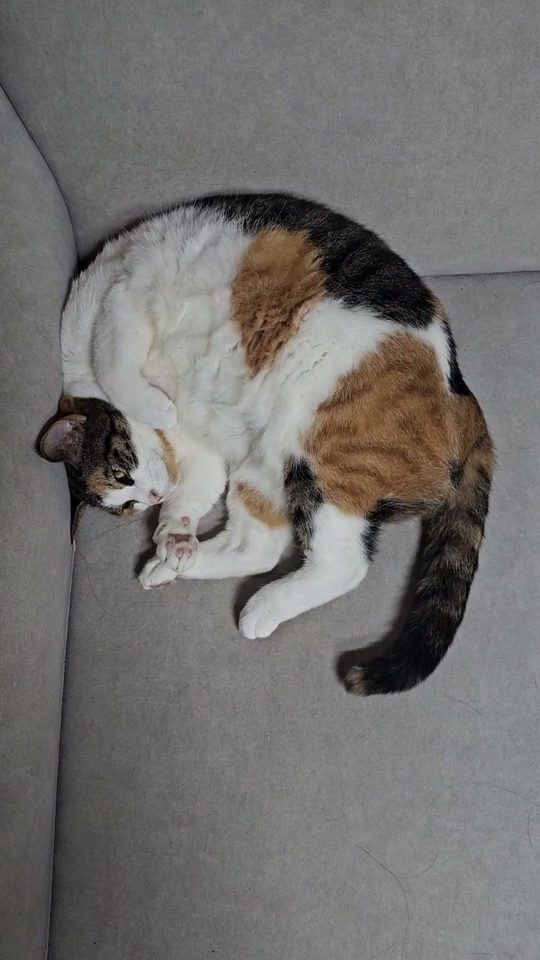

리얼뽑기, 펠트로 다시
v3 · 실제 흐름대로
고르신 방향(펠트 세계 · 진짜 동물 3가지 방식 비교 · 날씨는 3D로 · 광고 없음 · 캡슐 부화 · 4:5 자랑 카드)으로 처음부터 다시 짰어요. 화면은 실제 앱 크기(360×780)이고, 판정·문구는 지금 앱 코드 그대로예요.
1카메라로 진짜 녀석 뽑기
지금 앱 규칙 그대로예요. 집게 끝이 몸에 닿아야 잡히고(가운데 80% · 가장자리 35%), 잡히면 들려 올라가며 버둥대다 지면 미끄러져 빠져요. 몸 밖을 누르면 헛집어요. 캡슐은 맨 위에서.
- 들려 올라가는 모습 3가지를 골라 보세요: 펠트 스티커(흰 바느질 테두리로 떼어짐) · 오린 사진(지금 앱) · 잡자마자 작게(바로 캡슐).
- 결과도 골라서 볼 수 있어요: 성공 · 미끄러져 놓침 · 헛집음. 실패 문구는 앱 그대로("흔들려서 빠졌다", "헛집었다").
- 놓치면 방식마다 다르게: 스티커는 팔랑 떨어져 제자리에 "톡" 다시 붙고, 오린 사진은 툭 떨어져 사라지고, 작게는 캡슐이 "펑" 열려 녀석이 튀어 돌아가요.
- 성공하면 바로 2번 "처음 뽑은 카드"가 떠요.






화면을 끌어 집게를 맞추고 빨간 버튼
2처음 뽑았을 때
캡슐이 굴러 나가면 뽑기 화면 위에 자랑 카드 그대로가 떠요. 바로 공유할 수 있게, 보이는 그림과 올라가는 그림이 같아요.
- 주 버튼은 "자랑하기" 하나, "계속 뽑기"는 글자로. 카드 밖을 눌러도 안 닫혀요(지금 앱처럼 집게가 안 움직이게).
- 카드 아래 한 줄로 다음 할 일을 알려 줘요: "도감에 넣었어요 · 펫으로 만들 수 있어요 ›".
- 진짜 녀석은 스티커, 털뭉치 녀석은 그 녀석 그림.
도감에 넣었어요 · 펫으로 만들 수 있어요 ›
3자랑 카드 (4:5)
인스타 피드에 올리는 한 장. 펠트 세계 위에 열린 캡슐, 거기서 나온 녀석, 이름표. 앱 이름은 작게, 링크는 넣지 않아요(지금 원칙).
- 캡슐 색은 뽑을 때마다 달라요(지금 앱의 10색). 카드 강조색도 그 색을 따라가요.
- 오른쪽 위 우표 = 도감 번호. 아래 이름표 = 이름 · 종류 · 뽑은 날 · 성격 두 개.
진짜 녀석
털뭉치 녀석
4도감
칸마다 펠트 카드. 진짜 녀석은 스티커로, 펫을 만드는 중인 칸은 흔들리는 캡슐로, 못 뽑은 털뭉치는 닫힌 캡슐로 보여요.
- 위 숫자는 "털뭉치 7/16" 하나만(모을 목표가 보이게). 진짜 녀석 수는 칸으로 충분해요.
- "펫 설정"은 오른쪽 위 보조 칩. 펫 설정에서 뒤로 가면 다시 여기로 와요(오늘 고쳐서 커밋함).
도감
털뭉치 7 / 165펫 만들기 = 캡슐 부화
만드는 데 1~3분 걸려서, 화면을 붙잡아 두지 않아요. 누르면 고른 칸이 캡슐로 닫히고 흔들리며 금이 가요. 나가도 되고, 다 되면 알림이 오고 캡슐이 "퐁" 열려요.
- 광고는 뺐어요. 남은 무료 장수는 버튼 한 곳에만.
- 털뭉치·피규어는 고르는 칸 2개 + 버튼 1개. 피규어는 아직 안 그려 봤으면 "눌러서 미리보기".
- 도감 칸에도 같은 캡슐이 흔들려요(4번). 시안은 1~3분을 6초로 줄였어요.

리얼뽑기삼색이 털뭉치가 다 됐어요!

삼색이
진짜 고양이 · No.8 · 11월 27일 뽑음
펫으로 만들기
한 번 만들면 홈 화면에서 같이 살아요
6펫 설정
지금은 한 화면에 누를 곳이 20개쯤이에요. 위에 홈 화면 미리보기 + 켜기 스위치, 그 아래 누구 · 크기만 두고 나머지는 "더 보기" 안으로 접었어요.
- 고르는 대로 미리보기 속 녀석이 바로 바뀌어요(눌러 보세요).
- 더 보기: 두 번 톡톡 앱 구름 · 혼잣말 · 날씨 알려 주기(대략 위치) · 소리 · 홈 화면에서만/항상.
- 뒤로 = 도감.
펫

누구
크기
7날씨: 펫이 직접 해요
아이콘을 얹지 않고, 털뭉치가 스스로 우산을 꺼내 펴고 · 마스크를 꺼내 쓰고 · 목도리를 해요. 우산·마스크·목도리는 펫과 같은 3D 털 엔진에서 같은 빛으로 구웠어요.
- 비가 오기 시작하면 걷다가 멈춰 우산을 펴요. 미세먼지가 나쁘면 마스크를 꺼내 써요. 길게 누르면 지금 날씨 행동을 다시 해요.
- 말풍선은 지금 혼잣말 그대로, 한 줄만("비 와! 우산 챙겨").
- 우산 폭은 몸의 1.3배까지, 마스크·목도리는 몸 안에. 사진으로 만든 펫은 펫 그림을 만들 때 이 동작 칸도 같이 그려요.
날씨를 누르면 그 행동을 처음부터 해요 (12fps)
8스토어 첫 장
두 안이에요. A는 "사진 → 털뭉치 → 내 폰" 과정을 한 장에, B는 진짜 고양이 옆에 털뭉치가 앉아 있는 결과 한 장면으로 훅.
- 문구: "우리 아이 사진 한 장이 / 털뭉치 펫이 돼요". 2번째 장은 뽑기 재미(펫 없는 사람도).
- 사진은 실제 앱이 오린 삼색이와 그 털뭉치 결과물.
우리 아이 사진 한 장이
털뭉치 펫이 돼요

우리 집 삼색이
A · 과정
B · 결과 한 장면
9릴스 첫 장면 (3초)
앱이 실제로 하는 일을 3초에 그대로: 카메라 속 고양이 → 바느질 윤곽이 둘러지고 → 스티커로 떼어져 → 옆에 털뭉치가 퐁.
- 촬영 없이 있는 사진·누끼·결과물로 만들어요. 뒤는 지금 릴스 흐름.
- 자막은 스토어와 같은 말로 맞춰요.
+카메라를 끈 뽑기 (펠트 세계)
지난번에 괜찮다고 하신 펠트 세계 그대로 두었어요. 카메라를 끄면 이 화면이에요.
크기 M · 그림 4장 교체